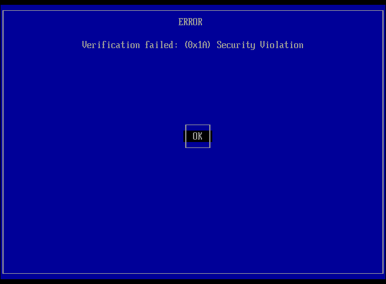

Most of the MOK Manager screens are simple menus, with each line in the box representing an option.
Use the arrow keys to highlight the required option, and then press the Enter key to select it.
On the first boot with Secure Boot enabled, you should see a screen like this.
To continue, press Enter.
To begin the process of enrolling the Puppy Linux MOK, press Enter.
Highlight Enroll key from disk, and press Enter.
This starts the process of selecting the file on disk that contains the MOK.
For Puppies installed with FrugalPup (or any of it's companion utilities), the MOK is in a file called puppy.cer.
The image is indicative only, the contents of the box will contain different data.
Each item in this menu identifies a partition that might contain the key file.
The items in the menu will most likely not be very meaningful, so, if in doubt, just select the first one.
Highlight a partition line, and press Enter.
This menu lists the directories and files in the root of the selected partition.
Again, the image is indicative only, and the contents in the box will contain different data.
If the correct partition was selected in the previous screen, the file puppy.cer will be in the menu.
If it is not, then this is probably the wrong partition. Press Esc, to return to the previous menu, and choose a different partition.
Highlight the Puppy key file puppy.cer, and press Enter.

Highlight Continue, and press Enter.
Highlight Yes, and press Enter.
Highlight Reboot, and press Enter.
This page has "borrowed" from https://distro.ibiblio.org/fatdog/web/faqs/secure-boot.html.